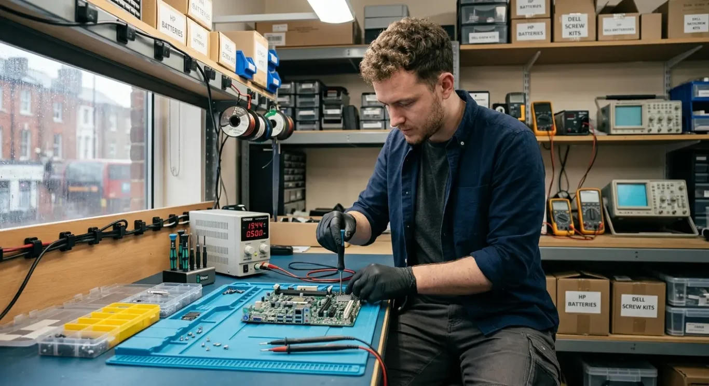
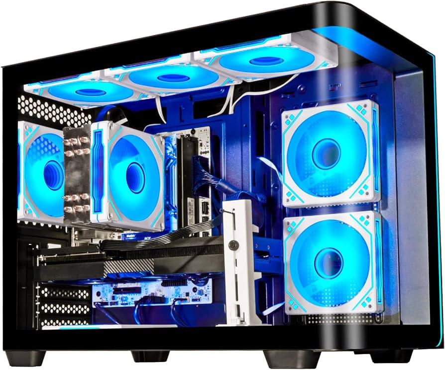

Por qué elegirnos
- Diagnóstico claro antes de cobrar la reparación.
- Repuestos con garantía y seguimiento del trabajo.
- Atención de lunes a sábado en el barrio.
También podés consultar tutoriales oficiales de Microsoft mientras esperás el presupuesto.
Wilmer Materano - Reparación de PCs y notebooks
En Tecnowil, de Wilmer Materano, reparamos computadoras de escritorio y notebooks en Av. Teniente Ibáñez 1445, CP 3400, Corrientes. Diagnosticamos el problema, te explicamos las opciones y dejamos el equipo listo para usar.
Trabajamos con hardware y software: no enciende, pantalla rota, virus, lentitud, cambio de disco, armado de PC gamer y mantenimiento preventivo.



También podés consultar tutoriales oficiales de Microsoft mientras esperás el presupuesto.